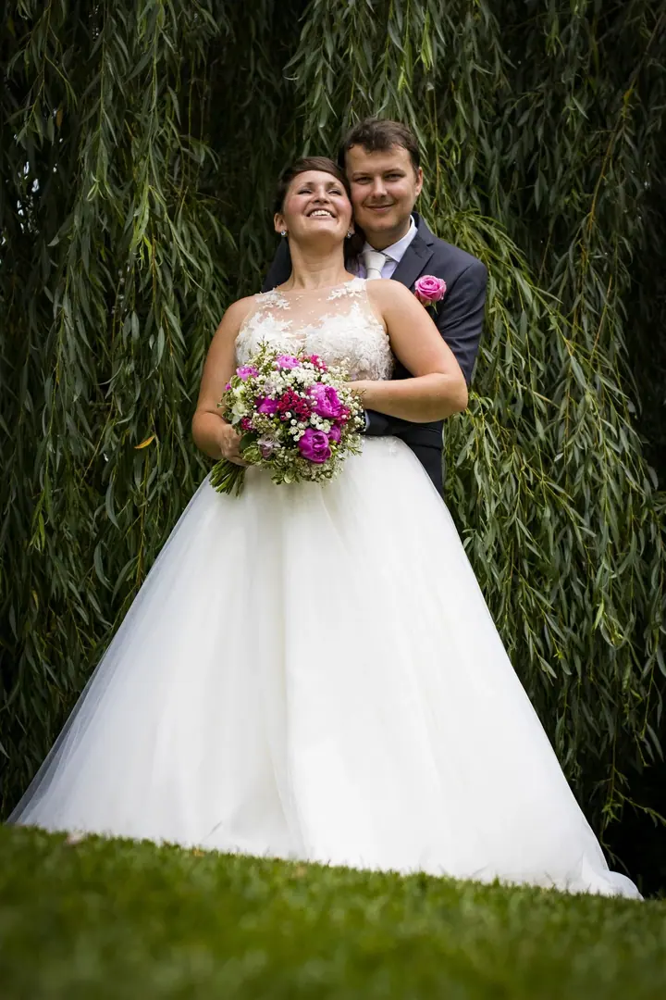
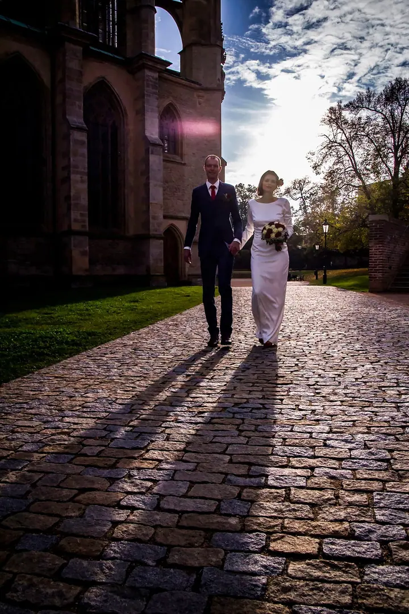
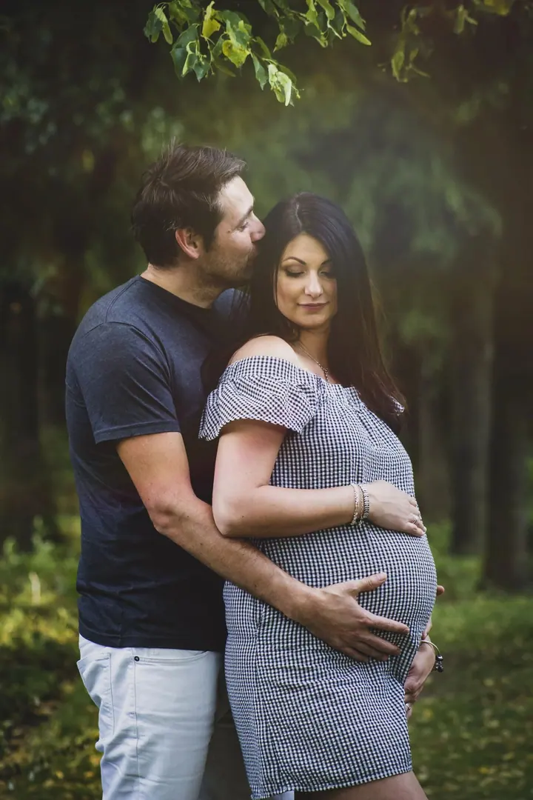
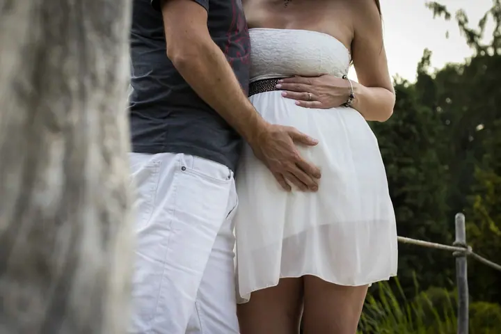

jedna
Svatby
Fotím převážně reportážně a podle přání přidám elegantní společné fotografie. Nabízím tři balíčky od menšího obřadu po celý den, rozsah i cenu ale vždy upravíme podle vašich představ.

Svatební a rodinná fotografka · Praha, Benešov u Prahy, Střední Čechy

Jmenuji se Tereza Zukalová a fotím svatby, těhotenství i rodiny v Praze a okolí Benešova. Většina mých fotografií má reportážní charakter, zachycuji spontánní momenty a přirozenou krásu bez zbytečného zasahování do dění.
Více o mně
Co fotím
jedna
Fotím převážně reportážně a podle přání přidám elegantní společné fotografie. Nabízím tři balíčky od menšího obřadu po celý den, rozsah i cenu ale vždy upravíme podle vašich představ.
dvě
Uvolněné focení venku nebo v klidu u vás doma. Když vás vybízím k pózování, nejde o nepohodlné nebo trapné pózy, spíš o ležérní.
tři
Lifestyle focení v parku, u řeky, na zahradě, ve městě nebo v bezpečí vašeho domova. Žádné dokonalé pózy, jen autentický, krásný chaos.
Firemní akce, koncerty, portréty zaměstnanců a týmové focení. Ráda zajistím i kompletní servis včetně grafické přípravy a tisku.
K pózování se dostaneme přirozeně, ne křečovitě.

Za objektivem
Fotím převážně reportážně, ale ráda se s vámi podílím i na společných fotkách v elegantním stylu. Každé focení řešíme individuálně a společně hledáme rovnováhu mezi lehce formálními snímky a přirozenými momenty plnými radosti a pohody. K pózování se dostaneme přirozeně, ne křečovitě, a pokud nejste zvyklí stát před fotoaparátem, ráda vás navedu.
Na svatbách a eventech se snažím být spíš nenápadná a splynout s hosty, aby si hosté i hostitelé mohli svůj den opravdu užít. Rodiny nejraději fotím venku, kde se děti mohou volně pohybovat, ale stejně ráda přijedu k vám domů nebo se sejdeme v ateliéru.
Kromě fotografie se věnuji grafickému designu. Díky dlouholetým zkušenostem s reklamní grafikou vám mohu navrhnout pozvánky, svatební oznámení nebo svatební noviny, případně s jejich tvorbou poradit. Tvořím hlavně mezi Prahou a Benešovem u Prahy, ale fotím po celé ČR.
Tereza
Ozvěte se mi a po telefonu si projdeme vaše představy, termín a místo. Rozsah balíčku můžeme upravit na míru.
Měsíc před svatbou spolu probereme detaily po telefonu, přes videohovor nebo na schůzce. U rodinného focení společně vybereme lokalitu.
Pohybuji se nenápadně mezi hosty a zachycuji, co se opravdu děje. Na společné fotky vás přirozeně navedu.
Upravené fotografie dodám v domluveném termínu. U svateb je dostanete i v soukromé galerii, kde je můžete sdílet s rodinou.
Portfolio
Otázky
Mám tři orientační balíčky: MINI za 7 000 Kč (1,5 hodiny, 60 fotografií), KLASIK za 15 000 Kč (asi 6 hodin, 250+ fotografií) a ALL DAY za 22 000 Kč (až 12 hodin, 400+ fotografií). Rozsah i cenu lze po dohodě upravit.
Nejčastěji v Praze a ve Středních Čechách až po Benešov u Prahy, ale fotím po celé ČR. U balíčku ALL DAY je doprava po celé republice v ceně, u ostatních se jiné lokality domlouvají individuálně.
Vůbec ne. K pózování se dostaneme přirozeně, ne křečovitě, a když nevíte, jak stát, ráda vás navedu. Většina fotek stejně vzniká spontánně.
Ano, dárkový poukaz vystavím na libovolnou částku nebo na konkrétní balíček. Platí rok od vystavení a za 500 Kč ho lze prodloužit o další rok.